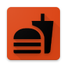

<mat-toolbar color="primary" class="app-header">
  <div> Asaan Admin</div>
  <span class="nav-tool-items">
    <button mat-button mat-raised-button class="mr10" (click)="gotoRestaurent()">Restaurent</button>
    <button mat-button mat-raised-button class="mr10" (click)="gotoDashboard()">Dashboard</button>
    <a mat-button mat-raised-button  (click)="logout()">Log Out</a>
  </span>
</mat-toolbar>
